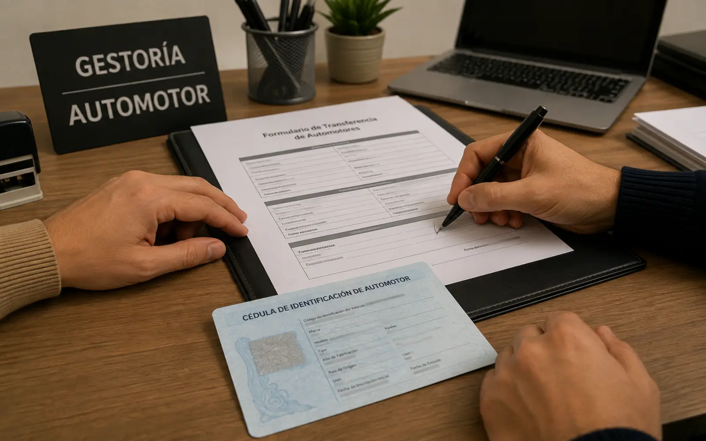

01
Fotomultas
Las infracciones detectadas por medios automáticos —cinemómetros, cámaras de cruce, sistemas de lectura de dominio— siguen un procedimiento distinto del de un control en la vía pública: no hay un funcionario que lo detenga en el momento, y usted suele enterarse mucho después, cuando llega la notificación o cuando la infracción aparece en una consulta.
Ese desfasaje es justamente donde se concentran los defectos. El equipo de medición, el acta que se labra a partir de la captación y la notificación posterior son actos con requisitos propios, y el incumplimiento de alguno de ellos puede dar lugar a un planteo.
Qué revisamos
- Los datos del acta y su correspondencia con el vehículo y el hecho imputado.
- Cómo, cuándo y a qué domicilio se practicó la notificación.
- El organismo que la labró y si es el competente para hacerlo.
- En qué estado se encuentran los plazos y qué vías siguen abiertas.
02
Multas que nunca le notificaron
Es la consulta más frecuente del área. La persona se entera de que tiene infracciones al intentar renovar la licencia, al transferir un vehículo o al pedir un libre deuda, y sostiene —muchas veces con razón— que nunca recibió nada en su domicilio.
La notificación no es un trámite accesorio: es la que le permite a usted conocer la imputación y defenderse. Por eso su validez debe analizarse en concreto, y de ese análisis puede surgir que la infracción sea cuestionable aunque hayan pasado años.
Si nunca recibió la notificación, evite pagar antes de que alguien revise el expediente. El pago suele cerrar discusiones que todavía estaban abiertas.
03
Prescripción
El paso del tiempo puede extinguir la posibilidad de perseguir una infracción, pero no funciona como un plazo único ni automático. El término aplicable depende de la norma que rige el caso, del organismo que labró el acta y de los actos que puedan haber interrumpido el curso del plazo, que no siempre son visibles para quien recibe la multa.
Por eso una infracción vieja no es necesariamente una infracción prescripta, y a la inversa: hay multas que se siguen reclamando cuando ya no correspondería. Determinar en cuál de los dos casos está la suya requiere ver el expediente.
04
Descargos
El descargo es la presentación con la que usted expone su posición frente a la infracción antes de que se resuelva. Bien planteado y presentado en término, es la instancia natural para discutir tanto los hechos como los defectos del procedimiento.
Es un tema con entidad propia y lo desarrollamos aparte:
cuándo corresponde presentar un descargo, qué documentación hace falta y por qué los plazos son determinantes.
05
Sentencias de faltas
Cuando el Juzgado de Faltas resuelve, dicta una sentencia que puede imponer una sanción de multa y, según el caso, otras consecuencias como inhabilitaciones. Esa resolución tiene efectos concretos: pasa a integrar los antecedentes y suele ser el origen de los impedimentos que después aparecen en otros trámites.
Recibir una notificación del Juzgado de Faltas no es el final del camino, pero sí abre plazos que corren. Lo más costoso en esta instancia es dejarlos vencer mientras se decide qué hacer.
06
Recursos de apelación
En determinados casos la resolución del Juzgado de Faltas puede recurrirse, de modo que sea revisada por otra instancia. No es una vía disponible siempre ni frente a cualquier decisión, y los plazos para interponerla suelen ser breves y perentorios.
Cuál es la vía que corresponde, ante quién se presenta y qué se puede discutir en esa instancia son cuestiones que dependen del municipio interviniente y del contenido de la resolución. Es conveniente evaluarlo apenas recibida la notificación y no sobre el cierre del plazo.
07
Multas de municipios distintos
Es habitual que una misma persona acumule infracciones de varios municipios: uno donde vive, otro donde trabaja y otros por los que simplemente pasó. Cada uno tiene su propio juzgado, su procedimiento y sus plazos, y no existe una gestión única que las resuelva todas de una sola vez.
Eso hace que el problema se perciba más grande de lo que suele ser. Ordenar el panorama —qué infracción corresponde a qué organismo, en qué estado está cada una y cuáles conviene discutir— es la primera parte del trabajo, y muchas veces reduce bastante el conjunto.
Qué necesitamos
El dominio del vehículo y su DNI. Con eso podemos relevar qué infracciones figuran y ante qué organismos.
Cuánto tarda
Depende de cada organismo. En la primera consulta le damos un plazo estimado y le avisamos si alguno se demora.
08
Problemas para transferir el vehículo
Las infracciones se asocian al dominio, no a la persona que conducía. Por eso las multas pendientes suelen aparecer cuando se intenta transferir el vehículo, y pueden demorar la operación o directamente impedirla, a veces con la venta ya acordada y el comprador esperando.
La situación se resuelve mejor antes de comprometerse: verificar qué figura sobre el dominio, si esas infracciones son discutibles y qué conviene hacer con cada una lleva menos tiempo que destrabar una transferencia frenada.

09
Otros inconvenientes por multas pendientes
Las multas impagas rara vez se quedan quietas. Suelen manifestarse en la renovación de la licencia, en trámites vinculados al vehículo y en gestiones que requieren acreditar que no hay deuda, y en general aparecen en el peor momento: cuando el trámite es urgente.
Si una infracción le está trabando una gestión concreta, el orden de trabajo cambia: primero conviene ver si es válida y qué vía permite destrabar el trámite en el menor tiempo posible.
Si el problema es puntualmente con la licencia, lo tratamos acá:
problemas para renovar la licencia de conducir.